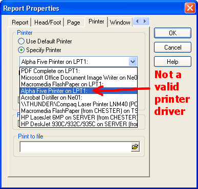

Print Properties
Report, Letter, and Label layouts let you save Page and Print properties directly in the layout. This lets you set margins, decide whether the layout should print in landscape or portrait mode, and choose the paper-size and printer on which the layout prints. For example, you can set properties in your sales Report so that it always prints in landscape mode.
Print properties are set in the Properties dialog box. The way you get to this dialog box varies depending on the type of layout you are designing.
If you are designing a Report, choose Report > Report Properties and click either the Page or Printer tabs.
If you are designing a Letter, choose Letter > Properties and click either the Page or Printer tabs.
If you are designing a Label, choose Label > Properties and click the Printer tab.
 Note : If you have
an "Alpha Anywhere Printer" entry, do not use it. It is not a valid
printer driver.
Note : If you have
an "Alpha Anywhere Printer" entry, do not use it. It is not a valid
printer driver.

See Also